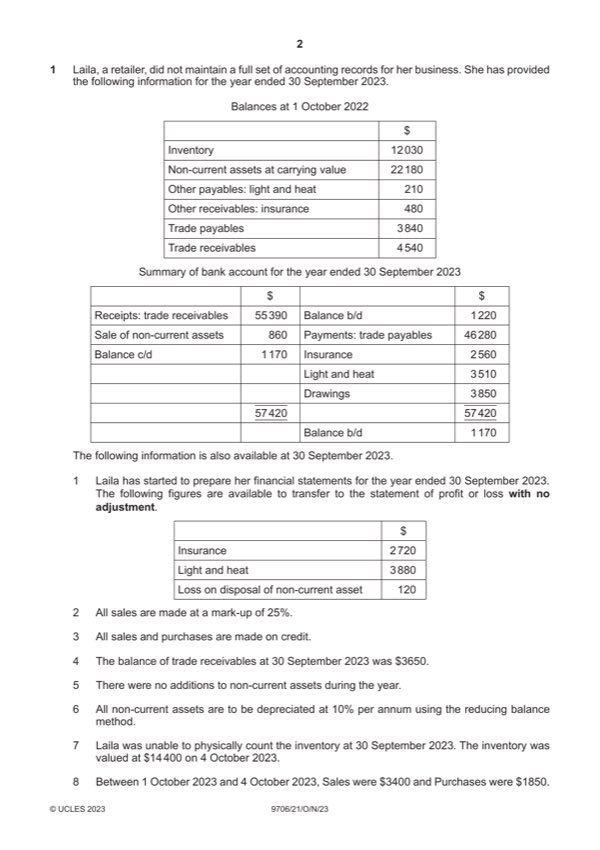

Question 1

Original paper page 2
Part 1(a) — solution
Calculate the value of closing inventory at 30 September 2023. 3
$15 270 (3) W1
W1
Mark points
- Include the ideas shown in the solution above.
Part 1(b) — solution
- W1 55 390 – 4 540 (1) + 3 650 (1) = 54 500
Mark points
- W1 55 390 – 4 540 (1) + 3 650 (1) = 54 500
Part 1(c) — solution
Prepare the statement of financial position at 30 September 2023. 12
Laila
Statement of financial position at 31 September 2023
$ $
Non-current assets 19 080 (1)
Current assets
Inventory 15 270 (1)OF
Trade receivables 3 650 (1)
Other receivables 320 (1)
Mark points
- Include the ideas shown in the solution above.
Part 1(c) — solution
Other payables 580 (1)
Mark points
- Include the ideas shown in the solution above.
Part 1(d) — solution
- Profits and losses are shared equally. (1)
- No interest is charged on drawings. (1)
- No interest is allowed on capital. (1)
- Interest of 5% is allowed on partners’ loans. (1)
Mark points
- Profits and losses are shared equally. (1)
- No interest is charged on drawings. (1)
- No interest is allowed on capital. (1)
- Interest of 5% is allowed on partners’ loans. (1)
Part 1(e) — solution
- The business owner may lack the experience or skills to maintain a full set of accounting records (1)
- The owner may have to employ someone to maintain the records (1)
- There may be an increase in costs resulting in a decrease in profits (1)
Mark points
- The business owner may lack the experience or skills to maintain a full set of accounting records (1)
- The owner may have to employ someone to maintain the records (1)
- There may be an increase in costs resulting in a decrease in profits (1)